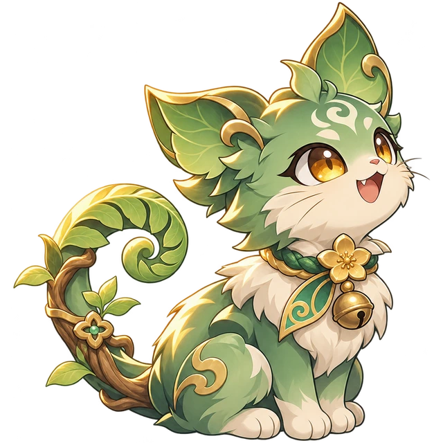

CHƯƠNG 01 / 05
Hẻm An Hòa
Nơi câu chuyện bắt đầu
Chuẩn bị lên đườngLớp 2 · Dễ
Thạch Vệ
Sương mù

Sinh lực◆ ◆ ◆
MỘT CÂU ĐÚNG · MỘT PHÉP MÀU
Mộc Miên đang đợi em ở đầu hẻm.
CHUYỆN KỂ AN HÒA · CHƯƠNG MỞ ĐẦU
Thành phố bỗng quên mất những câu chuyện của mình.
Cùng Mộc Miên tìm năm mảnh tri thức, đưa ánh sáng trở về.
CHƯƠNG 01 / 05
Nơi câu chuyện bắt đầu

Mộc Miên đang đợi em ở đầu hẻm.